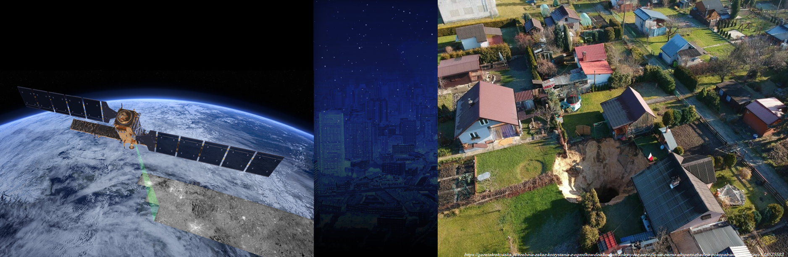
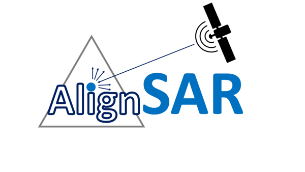
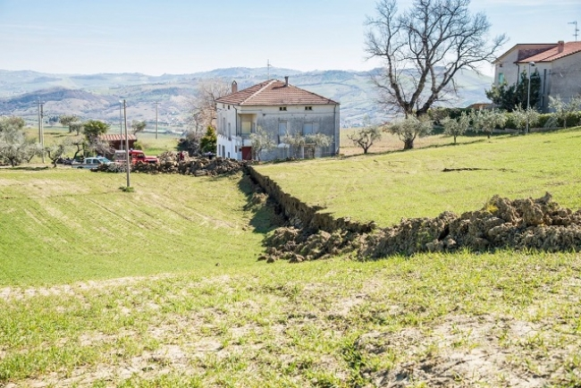

Projekty
Table of contents
Nowe spojrzenie na badanie kinematyki lodowców w kontekście globalnych zmian klimatycznych
Rola: kierownik projektu
Czast trwania: 02/2023 - 02/2026
Źródło finansowania: Narodowe Centrum Nauki, projekt Preludium 21
Główne cele: Projekt ma na celu opracowanie nowej metody monitorowania ruchów lodowców z wykorzystaniem danych SAR i uczenia maszynowego. Łącząc technikę Offset-Tracking (OT) i DInSAR z obrazami SAR o wysokiej rozdzielczości, przeanalizuje zmiany w kinematyce lodowca, wykryje anomalie i oceni trendy prędkości na Grenlandii i Svalbardzie. Badania obejmują testowanie algorytmów uczenia maszynowego w celu optymalizacji oceny przemieszczeń, a następnie analizy porównawcze z wykorzystaniem oprogramowania GIS. Ostatecznym celem jest zapewnienie dokładniejszego i skuteczniejszego sposobu monitorowania zachowania lodowców i zmian środowiskowych.
Słowa kluczowe: InSAR, Offset-Tracking, uczenie maszynowe, lodowce uchodzące do morza, długoterminowa analiza kinematyki, niecki obnieżniowe
Więcej informacji: link to the project website here
Nowy algorytm wykrywania prekursorów zapadliska
Rola: członek zespołu
Kierownik projektu: dr inż. Wojciech Witkowski (AGH w Krakowie)
Czas trwania: 07/2022 - 07/2025
Źródło finansowania: Narodowe Centrum Nauki, projekt Sonata 17
Main goals: Środowisko naturalne doświadcza nowych zjawisk w wyniku globalnego ocieplenia. W szczególności masywne zapadliska są spowodowane szybkim rozmarzaniem arktycznej wiecznej zmarzliny. Zapadliska nie tylko powodują poważne zmiany środowiskowe, ale są również przede wszystkim związane ze wzrostem emisji CO2. Z drugiej strony zmiany klimatyczne wskazują na nasilenie suszy, której może towarzyszyć zagrożenie zapadliskami. Zapadliska spowodowane przez człowieka zaobserwowano w wielu krajach, w tym w Wielkiej Brytanii, Stanach Zjednoczonych, Chinach i RPA. Niemniej jednak są one słabo monitorowane w porównaniu z innymi procesami deformacji, takimi jak osuwiska lub osiadanie wywołane zagęszczaniem. Tradycyjne techniki obserwacji, takie jak niwelacja, GNSS i tachimetria, napotykają trudności w monitorowaniu ruchu powierzchni terenu przed wystąpieniem zapadlisk. Jednak techniki zdalne, takie jak satelitarna interferometria radarowa (InSAR), mogą być przydatne w rozwiązaniu tego problemu. Jednocześnie intensywny rozwój technologii satelitarnych sprzyja skutecznej identyfikacji prekursorów zapadlisk. Co więcej, narzędzia uczenia maszynowego (ML), których popularność wzrosła w ostatnich latach, są coraz częściej wykorzystywane do identyfikacji wzorców w dużych zbiorach danych. Umożliwiają one ocenę zjawisk, dla których nie można opracować ścisłego algorytmu ze względu na mnogość czynników, pozwalając na jednoznaczny matematyczny opis badanego zjawiska. W rezultacie zaawansowane narzędzia InSAR w połączeniu z algorytmami ML pozwolą na lepsze zrozumienie fizyki powstawania zapadlisk, a także skuteczne wykrywanie rozwijających się zapadlisk. Badanie charakterystyki pola przemieszczeń w obszarze zapadlisk podniesie świadomość natury takich przyspieszonych deformacji spowodowanych zmianami klimatu.
Słowa kluczowe: InSAR, uczenie maszynowe, zapadliska, dane multispektralne, modelowanie geomechaniczne, prekursory, zmiana klimatu
Więcej infromacji: strona Sonaty

AlignSAR
Rola: członek zespołu
Kierownik projektu: Dr Eng. Ling Chang (TU Twente), dr inż. Wojciech Witkowski (AGH w Krakowie)
Czas trwania: 02/2023 - 02/2024
Źródło finansowania: Europejska Agencja Kosmiczna
Main goals: Projekt AlignSAR ma na celu dostarczenie otwartych zbiorów danych i narzędzi zgodntch ze standardem FAIR przeznaczonych do wykorzystania danych SAR, zapewniając interoperacyjność i spójność z istniejącymi i przyszłymi inicjatywami i technologiami. Projekt ułatwia szersze wykorzystanie danych SAR oraz ich integrację i łączenie z innymi zbiorami danych.
Słowa kluczowe: sygnatury SAR, uczenie maszynowe, zestawy danych referencyjnych
Więcej informacji: strona AlignSAR

Ocena możliwości zastosowania wysokorozdzielczych zobrazowań radarowych do monitorowania osuwisk
Rola: kierownik projektu
Czas trwania: 04/2022 - 06/2023
Źródło finansowania: IDUB - Inicjatywa Doskonałości - Uczelnia Badawcza
Main goals: Projekt ten miał na celu sprawdzenie, czy dane SAr o wysokiej rozdzielczości i metoda Offset-Tracking mogą dostarczyć informacji o polu przemieszczenia dla szybkiego osuwiska. Studium przypadku zlokalizowane jest w środkowych Włoszech, w Citivella del Tronto. Obliczenia przemieszczeń dla głównej fazy przemieszczenia, jak również dla okresu po osunięciu się ziemi, zostały wykonane przy użyciu danych Sentinel-1 i TerraSAR-X w celu porównania użyteczności tych zbiorów danych i metody OT dla takiego zastosowania.
Słowa kluczowe: dane SAR, Offset-Tracking, osuwiska, dane wysokorozdzielcze, TerraSAR-X
